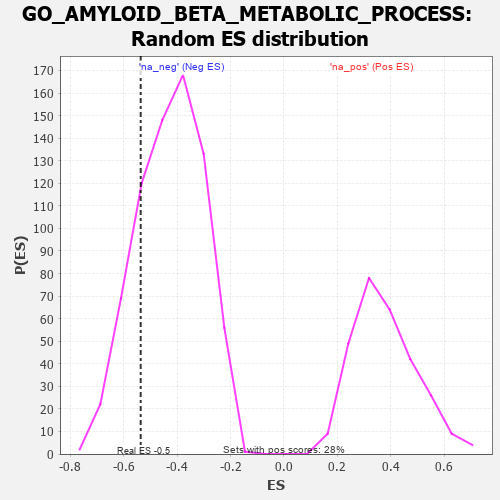

| | | Dataset | 7d |
| Phenotype | NoPhenotypeAvailable |
| Upregulated in class | na_neg |
| GeneSet | GO_AMYLOID_BETA_METABOLIC_PROCESS |
| Enrichment Score (ES) | -0.53649104 |
| Normalized Enrichment Score (NES) | -1.2637938 |
| Nominal p-value | 0.18776079 |
| FDR q-value | 0.524539 |
| FWER p-Value | 1.0 |
Table: GSEA Results Summary
 Fig 1: Enrichment plot: GO_AMYLOID_BETA_METABOLIC_PROCESS
Fig 1: Enrichment plot: GO_AMYLOID_BETA_METABOLIC_PROCESS
Profile of the Running ES Score & Positions of GeneSet Members on the Rank Ordered List
| PROBE | GENE SYMBOL | GENE_TITLE | RANK IN GENE LIST | RANK METRIC SCORE | RUNNING ES | CORE ENRICHMENT | | 1 | GSK3A | | | 351 | 0.745 | 0.0298 | No |
| 2 | BACE1 | | | 1673 | 0.360 | -0.1004 | No |
| 3 | PIN1 | | | 3543 | 0.069 | -0.3285 | No |
| 4 | NTRK2 | | | 4543 | -0.104 | -0.4437 | No |
| 5 | CLU | | | 4889 | -0.174 | -0.4697 | No |
| 6 | IDE | | | 5252 | -0.258 | -0.4897 | Yes |
| 7 | EPHA4 | | | 5273 | -0.265 | -0.4659 | Yes |
| 8 | ABCG1 | | | 5778 | -0.399 | -0.4896 | Yes |
| 9 | ROCK1 | | | 6152 | -0.520 | -0.4849 | Yes |
| 10 | APEH | | | 6393 | -0.613 | -0.4542 | Yes |
| 11 | ABCA2 | | | 6433 | -0.634 | -0.3962 | Yes |
| 12 | ACE | | | 6526 | -0.674 | -0.3408 | Yes |
| 13 | SPON1 | | | 7151 | -1.035 | -0.3165 | Yes |
| 14 | CASP3 | | | 7747 | -1.902 | -0.2024 | Yes |
| 15 | SP1 | | | 7840 | -2.321 | 0.0165 | Yes |
Table: GSEA details [plain text format]

Fig 2: GO_AMYLOID_BETA_METABOLIC_PROCESS: Random ES distribution
Gene set null distribution of ES for GO_AMYLOID_BETA_METABOLIC_PROCESS